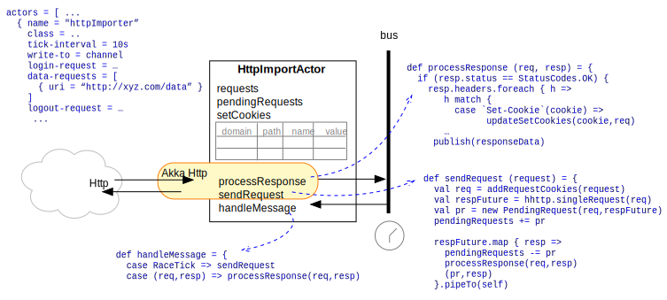

HttpImportActor
The gov.nasa.race.http.HttpImportActor is a generic HTTP client that can periodically run
configured web queries and publish the (potentially translated) response data to a RACE channel.
To that end the actor configuration uses two options: tick-interval and data-requests:
...
actors = [ ...
{ name = "testImporter"
class = "gov.nasa.race.http.HttpImportActor"
write-to = "/output"
..
tick-interval = 10s // how often do we run the query
data-requests = [ // query specifications
{ uri = "http://somehost.com:8080/data" }
]
...Each query specification needs a uri (potentially with query parameters) and can include a
HTTP method and entity (type and content).
The actor implementation is based on the akka-http library and uses Scala futures to map server
responses back into actor messages. The main actor methhods are sendRequest() and
processResponse(). The former is triggered by (periodic) RaceTick messages while the latter is
called to process (PendingRequest,HttpResponse) messages that are posted to the actors mailbox
when the respective future is completed:

HttpImportActor can be extended to override a processResponseData() method that can
translate raw content of valid server responses before publishing them to RACE channels.
The HttpImportActor is fully compatible with the RACE HttpServer, i.e. it can be used to
build distributed RACE applications that communicate through HTTP or HTTPS.
Encrypted Content
HttpImportActor can use the HTTPS protocol for server authentication and content encryption.
If the server has a publicly available certificate the only required configuration is
the https://... protocol prefix in the query URI(s).
For testing purposes or internal networks the truststore can be configured like this:
ssl-config {
trustManager = {
stores = [
{ path: ../cert/localhost.jks, type: "JKS", password: "supersecret" }
//,{ path: ${java.home}/lib/security/cacerts } # Default trust store
]
}
}Both path and password should be kept in Encrypted Configurations for production
applications.
Details of how to create trust stores can be found on CertGen and SSLConfig, RACE includes the
script/gen-server-cert.sh and script/gen-ca-cert.sh scripts to automate the process by
means of the keytool that is included in JDKs.
User Authentication
If content requires user authentication the configuration has to be extended with login-request
and (optionally) logout-request options:
...
actors = [ ...
{ name = "authorizedImporter"
..
login-request = {
method = "POST"
uri = "https://localhost:8080/secretData-login"
entity = {
type = "application/x-www-form-urlencoded"
content = "u=someUser&nid=supersecret" // this would normally go into the vault
}
}
data-requests = ...
logout-request = {
method = "POST"
uri = "https://localhost:8080/secretData-logout"
}As usual, user credentials (content option in above example) should come from Encrypted Configurations.
User authentication implementation is generic, i.e. it uses cookie client management like a normal web
browser - the server responds to a valid login request by sending a Set-Cookie response header.
The respective cookie is stored by HttpImportActor as a (domain,path,name,value) tuple, and
each successive request checks for matching domain- and path-prefixes based on the request URI.
Each server response can update or add cookies, which enables single-request authentication (i.e.
each cookie value is only good for the next query of an ongoing session and is not stored
permanently).